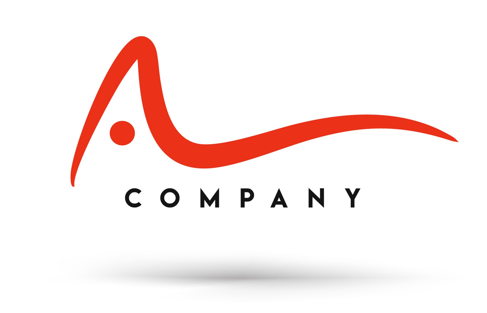

The global summit stands for Food Improved by Research, Science and Technology. The world’s leading food technology event plus the biggest B2B food expo makes a return to Mexico City starting October 13, 2022. Take in this dynamic, reimagined experience in-person or join virtually.
Please contact us per email for any further questions about Food Industry Global Summit 2022!
fisummit2022@foodmx.com
The logo of the Food Industry Global Summit 2022 was decided through the logo competition from 8 June to 7 July
Take a look at the last to Food Industry Global Summits which took place in Buenos Aires and in Warsaw.